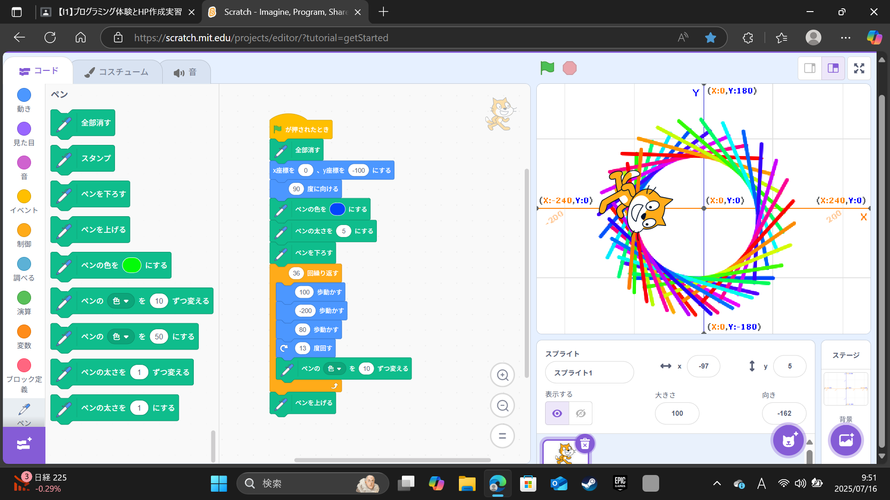
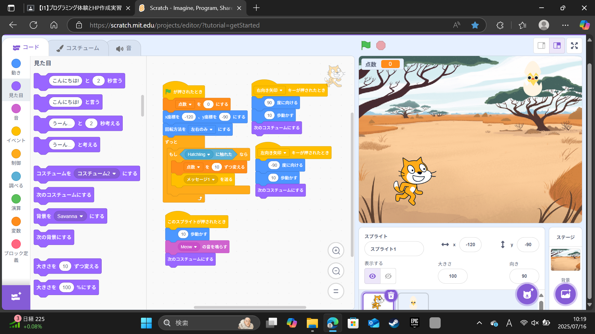

1週目のレポート ： 公大高専１年実習I-1
1a班09番 okakan
第1週目
1-1 サイエンスアート

1.内容
スクラッチのキャラクターのネコを歩かせたり、ネコの角度を変えたりするなどをしたりするのと、スクラッチの拡張機能の
ペンを使ったりして、様々な色が使われている模様を描いた。
2.感想
スクラッチを使ったプログラミングは高専に入学する前から行っており、スクラッチの作業はスムーズに進ませることができたが、
拡張機能を使ったことがなく、また新たなプログラミングの方法を学ぶことができた。
1-2 ゲーム

1.内容
ネコを左右に歩かせるプログラムを作成した。また、そこでもうひとつのオブジェクトを作成し、ランダムな位置からランダムな秒数を
かけて上から降ってくるようにプログラムを作成した。そしてネコがそのオブジェクトに触れると得点を稼ぐことが
できる簡単なゲームを作成した。
2.感想
ふたつのプログラムが上手いこと組み合わさるようにプログラムし、簡単なゲームを作成することができ、
これを利用すればまた発展したプログラミングができそうだなと思った。
1-3 ホームページ作成
私のホームページ
1.内容
githubのアカウントを作り、用意された手順に従いながら、自分のウェブサイトを作った。
だがウェブサイトの作成が上手いこといかず、次週に持ち込むことにした。
2.感想
forkする先のサイトを間違えるという失敗をしてしまい、周りに遅れをとってしまった。
このような失敗を減らせるように、ひとつひとつ注視して作業に取り組んでいきたいなと思った。
各ページへのリンク
1週目のレポート
2週目のレポート
3週目のレポート
私のホームページ